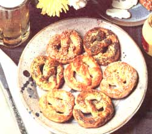
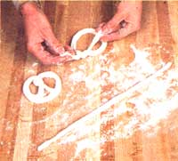
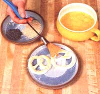

You might think (as most folks do) that the only way to enjoy warm, chewy pretzels is to patronize a big-city street vendor or a hawker at a summer ball game, but the snack can also come from your own kitchen. It's a terrific antidote for the afternoon or evening munchies, and can also be counted on to be a best seller at any bake sale. Furthermore, the treat is relatively easy to prepare ... and is sure to increase any cook's popularity!
Pretzels have been around for ages ... in fact, one legend traces their origin to a monk in seventh century northern Italy. Careful never to waste a bit of bread dough when baking for his monastery, he is said to have saved all the little leftover strips and shaped them to resemble a praying child's arms. This story claims the snack's name came from a Latin word meaning "little reward", since the kindly monk gave these symbolic biscuits to children for saying their prayers.
There are, in fact, many stories concerning the twisty treat's origin, but I'd have to guess that there are even more variations of its basic recipe. Here's a good "beginner's" version that should yield about two dozen soft pretzels. You'll need the following ingredients:
1/2 cup of warm water
I tablespoon of dry yeast
1-1/2 cups of hot water
1/3 cup of powdered milk
I tablespoon of honey
I teaspoon of salt
2 tablespoons of shortening
4 to 4-1/2 cups of flour
4 cups of boiling water
4 teaspoons of baking soda
I egg
coarse (or sea) salt
First, in a small bowl, stir together 112 cup of warm water and I tablespoon of dry yeast. Set this aside (for 10 or 15 minutes) until it becomes bubbly. Meanwhile, mix 1- 1/2 cups of hot water, 1/3 cup of powdered milk, 1 tablespoon of honey, 1 teaspoon of salt, and 2 tablespoons of shortening in a large bowl. Once this concoction has cooled to lukewarm, pour in the frothy yeast mixture and stir. Next, slowly add 4 to 4-1/2 cups of flour and knead the dough until it becomes satinysmooth. It should then be greased, covered with a clean cloth, and placed in a warm, draft-free spot to rise for about one hour ... after which you can punch the dough down to its original size and allow it to rise for another 30 minutes. It'll then be ready to be shaped into pretzels.
You'll likely find it easier to work with half of the dough at one time (put what you're not using under a clean cloth so it can't dry out). Roll out the dough to about 1/8" thick and then cut it into 12 strips. Shape these strips into "ropes"-each 16" to 18" long-by rolling them between your hands. The strands will double in size when baked, so they should be only half as thick as you want your finished pretzels to be.
To make the traditional design, form an oval shape with the "rope", crossing one long end first over and then under the other (see photo). Then bring the left end down to an imaginary seven o'clock position on the oval, and the right end to five o'clock. Press these tips down firmly so they won't come loose while cooking. After you've twisted all of the first lump of dough into the proper shapes, do the same with the second one (again, it will be best to store the uncooked pretzels under a clean cloth).
Now, in a large pot, bring 4 cups of water, to which 4 teaspoons of baking soda has been added, to a rapid boil. Then gently place two or three pretzels into it, let them cook for a minute (or until they float), lift them out, and drain them. After they've all been cooked and drained, place them on a greased baking sheet, brush them with beaten egg, and sprinkle on some coarse salt (sea salt can, of course, be substituted here). Let the pretzels bake in a hot oven (450°F) for 12 to 15 minutes, or until they're golden brown. Serve them warm (perhaps with some piquant mustard or cream cheese), but do let them cool a bit ... or your eager eaters could end up with burned fingers and tongues.
You might also want to try making soft pretzels from whole wheat flour. If so, prepare your yeast mixture from 1/2 tablespoon of dry yeast, I teaspoon of honey, and 1-1/2 cups of warm water. As soon as the mix bubbles, add 4 to 4-1/2 cups of whole wheat flour (leave out all the other ingredients). Knead this together and then follow the same steps as in the first recipe, but bake the twists at 475°F for 8-10 minutes without boiling them. And of course, your pretzels don't have to be coated with salt. My family has enjoyed them with sesame seeds or flavored frostings in place of' the traditional seasoning.
Although I've found it hard to make more "little rewards" than my brood can promptly consume, you might be able to cook up a big enough batch to have extras. If so, you'll be pleased to find that the baked pretzels freeze nicely . . . and if taken straight from the freezer and put in a 200°F oven for a few minutes, they'll taste as fresh and chewy as if they'd been prepared that day.
|
 |
 |
 |